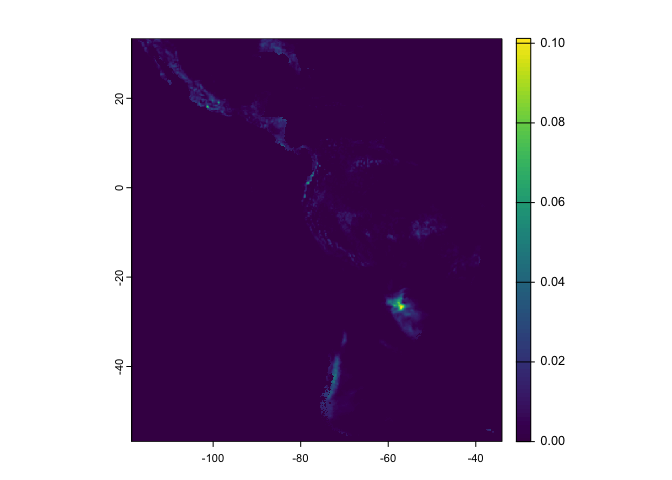

Access, download and locally cache files deposited on Zenodo easily.
Installation
You can install the development version of zendown from GitHub with:
# install.packages("remotes")
remotes::install_github("rfsaldanha/zendown")Example
This Zenodo deposit contains RDS files from examples datasets.
First, you need to find the Zenodo deposit code. It is the number that appears on the end of a Zenodo deposit link. The code number also appears on the Zenodo DOI.
Deposition code: 10959197
With the deposit code and the desired file name, you can just access the file with the zen_file function.
my_iris <- zen_file(deposit_id = 10959197, file_name = "iris.rds") |>
readRDS()
head(my_iris)
#> Sepal.Length Sepal.Width Petal.Length Petal.Width Species
#> 1 5.1 3.5 1.4 0.2 setosa
#> 2 4.9 3.0 1.4 0.2 setosa
#> 3 4.7 3.2 1.3 0.2 setosa
#> 4 4.6 3.1 1.5 0.2 setosa
#> 5 5.0 3.6 1.4 0.2 setosa
#> 6 5.4 3.9 1.7 0.4 setosaThe function will create a cache on your machine with all accessed files, avoiding re-downloading them when you access some file again.
Cache
By default, the cache is stored on a temporary folder that is cleaned when the R session is ended.
To use a persistent cache and other options, check this article.
More examples
# https://zenodo.org/records/10848
zen_file(10848, "DOAJ_Soc_Licenses_Correct.csv") |>
read.csv2() |>
tibble::tibble() |>
head()
#> # A tibble: 6 × 12
#> X DOAJNR Title Title.Alternative Identifier Publisher Language ISSN EISSN
#> <int> <int> <chr> <chr> <chr> <chr> <chr> <chr> <chr>
#> 1 1 37 "Est… <NA> http://ww… "Univers… Spanish… 1405… <NA>
#> 2 2 65 "Rev… "Review of Resea… http://rc… "Expert … English… 1583… 1584…
#> 3 3 85 "Soc… <NA> http://ej… "Firenze… English… 2038… <NA>
#> 4 4 106 "Jou… <NA> http://jf… "New Pra… English 1945… 1944…
#> 5 5 195 "Oñ… <NA> http://op… "Oñati … English… 2079… <NA>
#> 6 6 198 "Soc… <NA> http://so… "Associa… French 1950… <NA>
#> # ℹ 3 more variables: CC.License.Doaj <chr>, CC.License.Checked <chr>,
#> # Wrong.Cat.Doaj <chr>
# https://zenodo.org/records/10947952
zen_file(10947952, "2m_temperature_max.parquet") |>
arrow::read_parquet() |>
tibble::tibble() |>
head()
#> # A tibble: 6 × 4
#> code_muni date name value
#> <int> <date> <chr> <dbl>
#> 1 1100015 2023-01-01 2m_temperature_max_mean 304.
#> 2 1100015 2023-01-02 2m_temperature_max_mean 302.
#> 3 1100015 2023-01-03 2m_temperature_max_mean 302.
#> 4 1100015 2023-01-04 2m_temperature_max_mean 302.
#> 5 1100015 2023-01-05 2m_temperature_max_mean 297.
#> 6 1100015 2023-01-06 2m_temperature_max_mean 302.
# https://zenodo.org/records/10889682
zen_file(10889682, "total_precipitation_2023-09-01_2023-09-30_day_sum.nc") |>
terra::rast() |>
terra::plot(1)
zen4R
To explore the Zenodo API possibilities to problematically store files and other procedures, check the zen4R package.